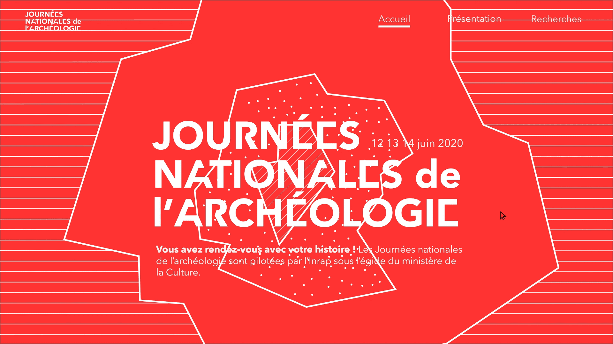
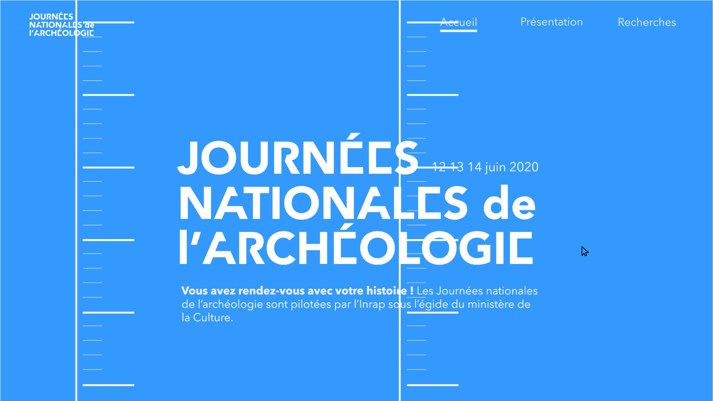
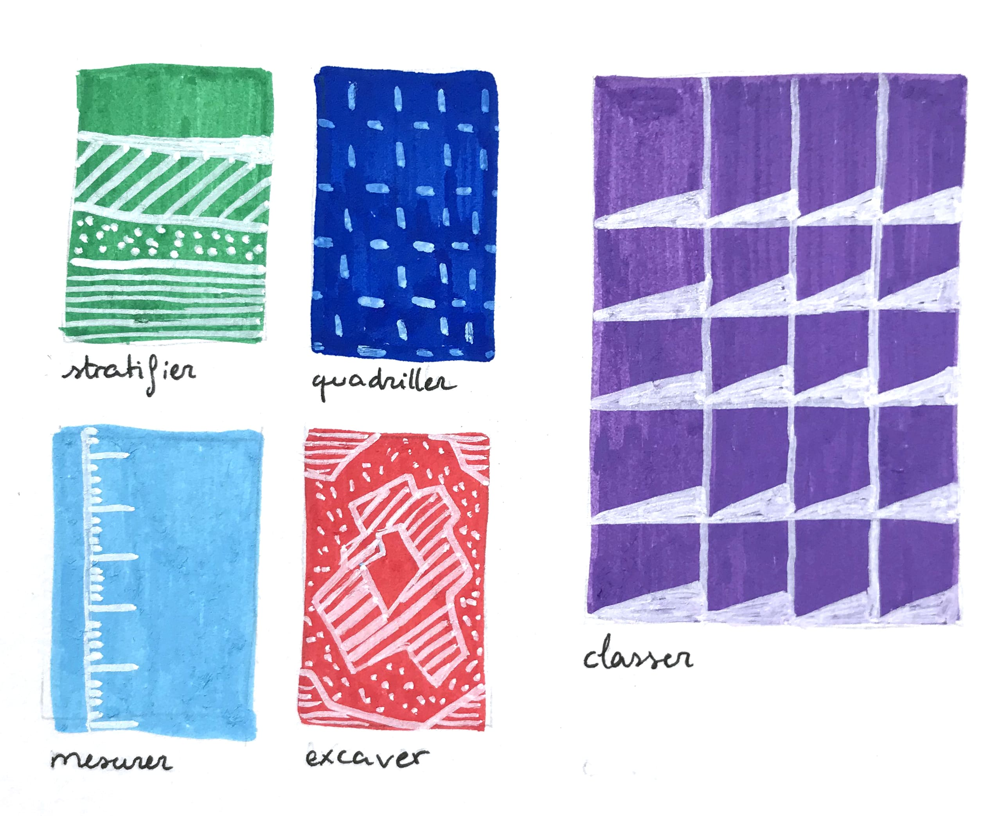
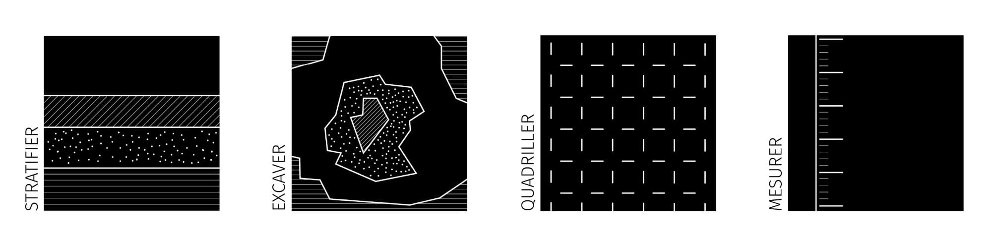
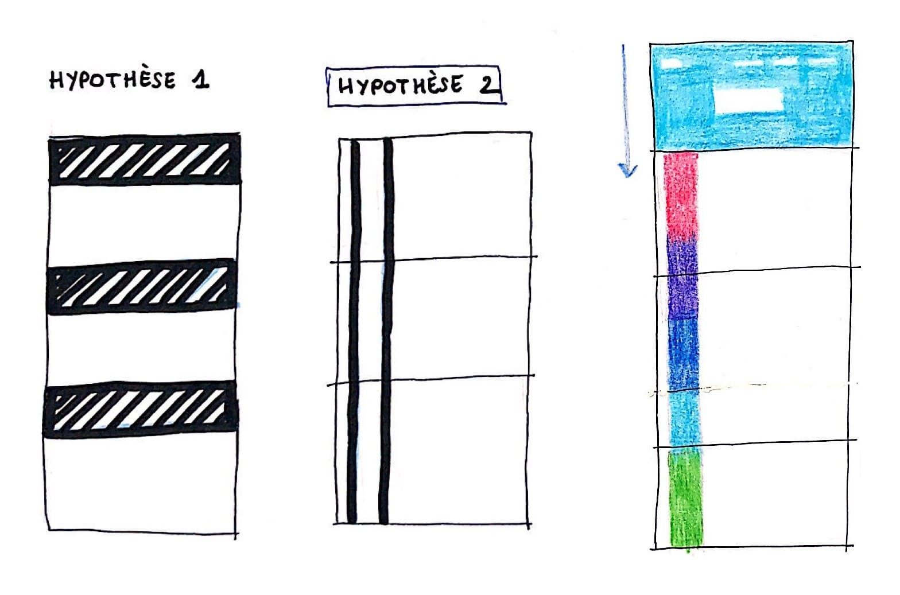
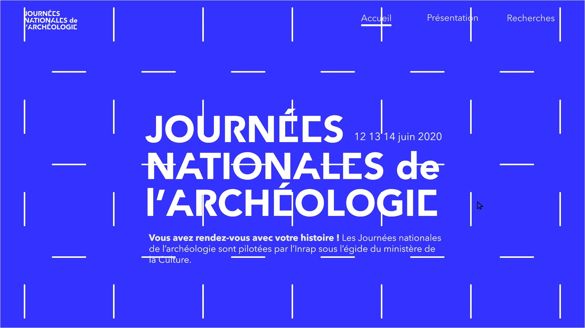
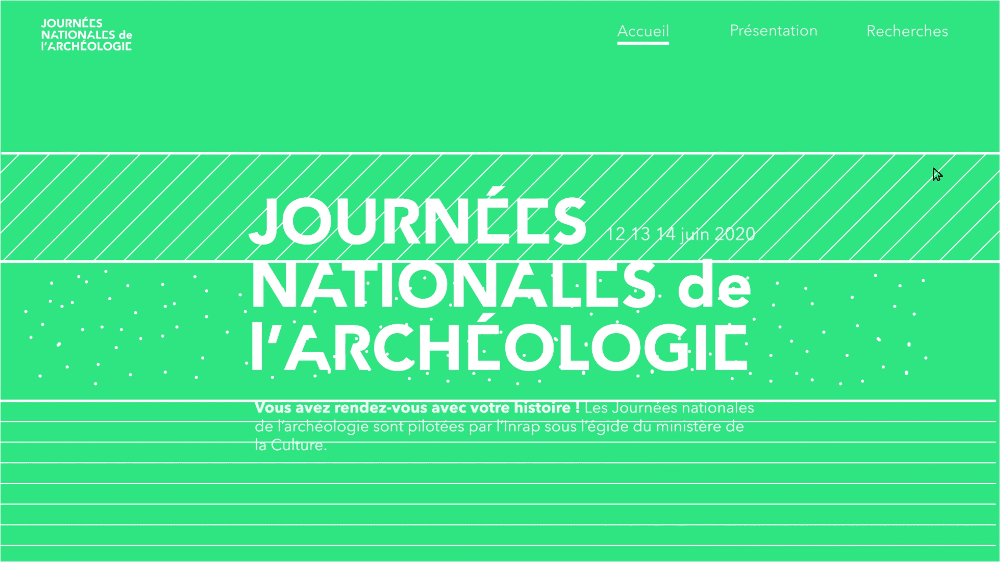
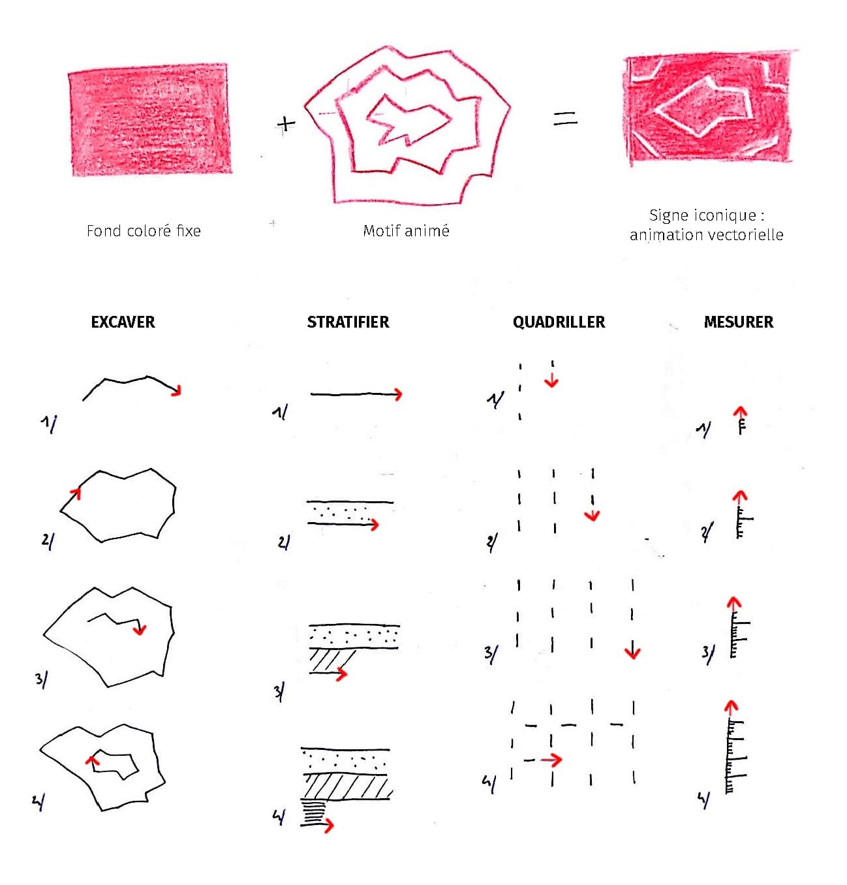
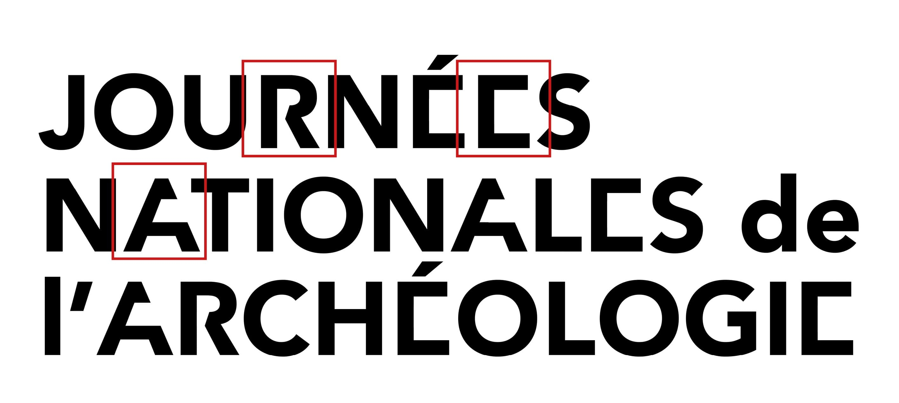
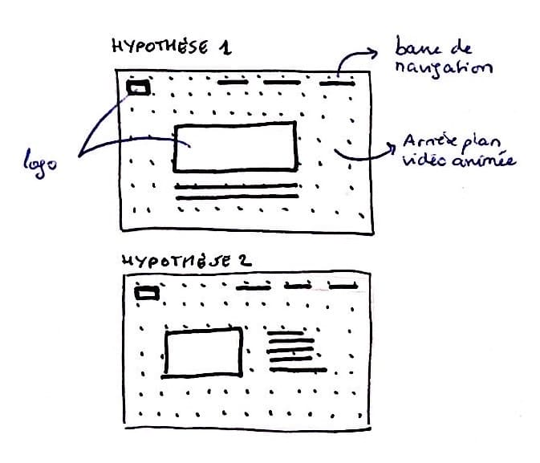

JNA
Identité - Webdesign
Prototype de site Web pour les Journées Nationales de l’Archéologie
Prototype sur After Effects
Basé sur les verbes d’action du métier d’archéologue représentés par des signes graphiques abstraits (excaver, quadriller, mesurer, stratifier).
En entrant dans le site, on est immergé dans une vidéo en plein écran, avec les animations de motifs qui correspondent aux verbes d'action.









